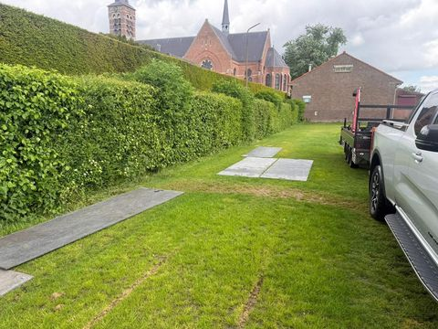
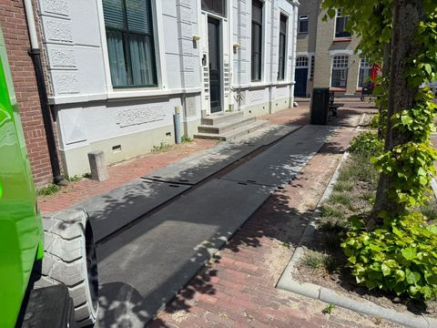
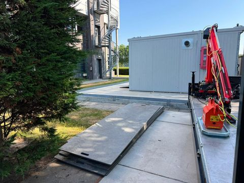
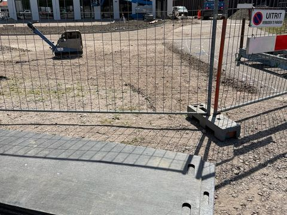
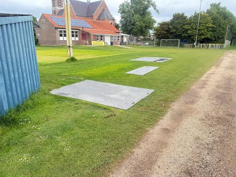
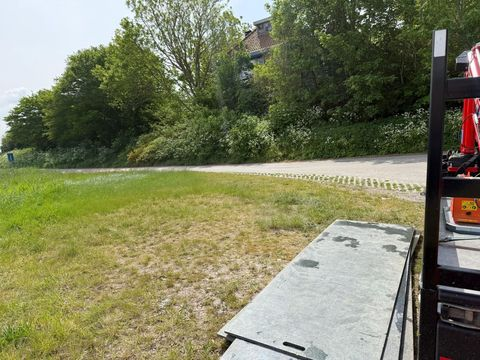

Rijplaten en loopschotten per klus
Platen verdelen het gewicht van wielen en rupsen over een groter oppervlak. Zo zakt een machine niet weg.
Tuin
Loopschotten
Bij graafwerk of nieuwe bestrating rijden kruiwagen en minigraver vaak over het gazon. Een rij loopschotten geeft een vast pad, zodat wielen niet in het gras wegzakken.

Oprit en bestrating
Loopschotten of rijplaten
Bij werk aan huis komen er aanhangers, containers en machines over de oprit. Platen op de bestrating verdelen het gewicht, zodat klinkers minder snel verzakken. Voor een hoogwerker of kraan op straat kiest u rijplaten.

Verbouwing
Loopschotten of rijplaten
Bij een verbouwing loopt u vaak dezelfde route: van de straat via de tuin naar de achterdeur of de container. Loopschotten maken van die route een vast pad, ook na regen.

Bouwplaats
Rijplaten
Op onverharde grond maakt u met rijplaten een tijdelijke rijbaan voor graafmachine, shovel of dumper. Is de machine breder dan 1 meter, leg dan twee rijen naast elkaar.

Evenement
Rijplaten en loopschotten
Op grasland heeft een evenement twee soorten paden nodig. Rijplaten voor leveranciers en voertuigen, loopschotten voor looppaden en ingangen.

Agrarisch
Rijplaten
Op het erf of het land maakt u met rijplaten een werkpad over zachte grond. Bijvoorbeeld bij drainage, onderhoud of het plaatsen van een opslag.

Vraag de platen aan
Wij bezorgen in heel Zeeland, of u haalt de platen op in Heinkenszand.